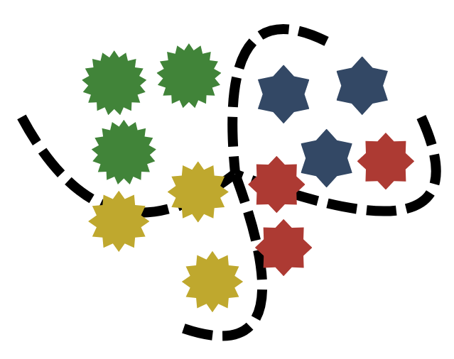
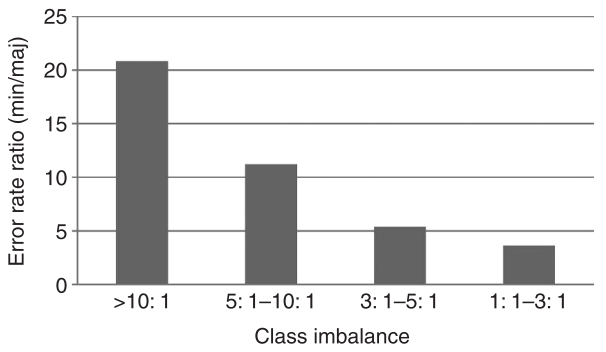
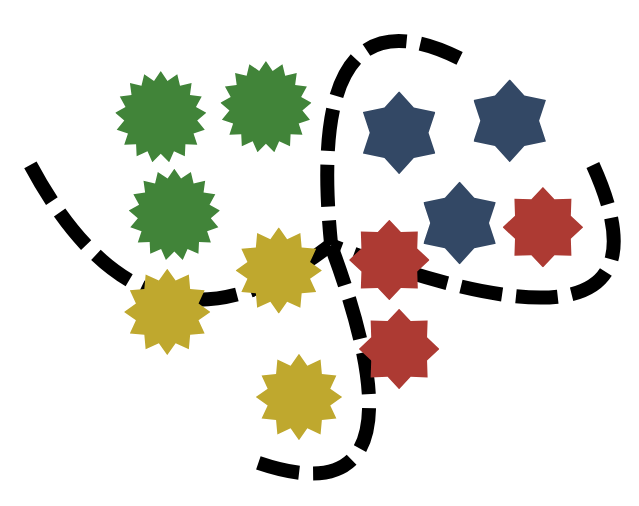
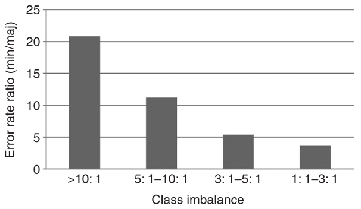

Perbandingan Metode Sintesis Citra Medis Berbasis Model Generatif untuk Mengatasi Imbalanced Dataset Menggunakan ACGAN, CVAE, dan CDDPM
Klasifikasi Citra
Klasifikasi citra merupakan proses mengelompokkan gambar ke dalam kelas-kelas tertentu berdasarkan fitur atau pola visual yang dikandungnya. Proses ini menjadi salah satu tugas dasar dalam pengolahan citra, terutama ketika sistem perlu mengenali dan membedakan objek secara otomatis.
Implementasi Klasifikasi Citra
Penginderaan Jauh
Klasifikasi citra dengan teknik penginderaan jauh untuk mengelompokkan tutupan dan jenis penggunaan lahan atau mendeteksi kebakaran hutan. Proses ini penting dalam pemetaan wilayah dan perencanaan tata ruang.
Aplikasi Medis
Klasifikasi citra medis seperti MRI, CT-Scan, atau X-ray untuk mengidentifikasi kondisi atau penyakit tertentu. Contohnya meliputi deteksi tumor, klasifikasi sel kanker, dan diagnosis pneumonia dari citra thorax.
Industri
Klasifikasi citra dalam proses produksi untuk membedakan produk cacat dan tidak cacat, mengelompokkan jenis komponen, atau mendeteksi kerusakan visual secara otomatis dalam inspeksi kualitas.
Lingkungan
Klasifikasi citra lingkungan untuk mengidentifikasi jenis vegetasi, mendeteksi wilayah terdampak polusi, atau mengklasifikasikan kualitas perairan dan udara melalui pengamatan visual berbasis citra.
 



Apa yang Terjadi Saat Terlalu Banyak Kelas dan Data Tidak Seimbang?
Dalam pengolahan citra menggunakan algoritma machine learning maupun deep learning, muncul sejumlah tantangan mendasar yang dapat memengaruhi kinerja model secara signifikan. Dua di antaranya adalah klasifikasi multiclass dan ketidakseimbangan data, yang sering kali muncul dalam kasus-kasus nyata di domain medis.